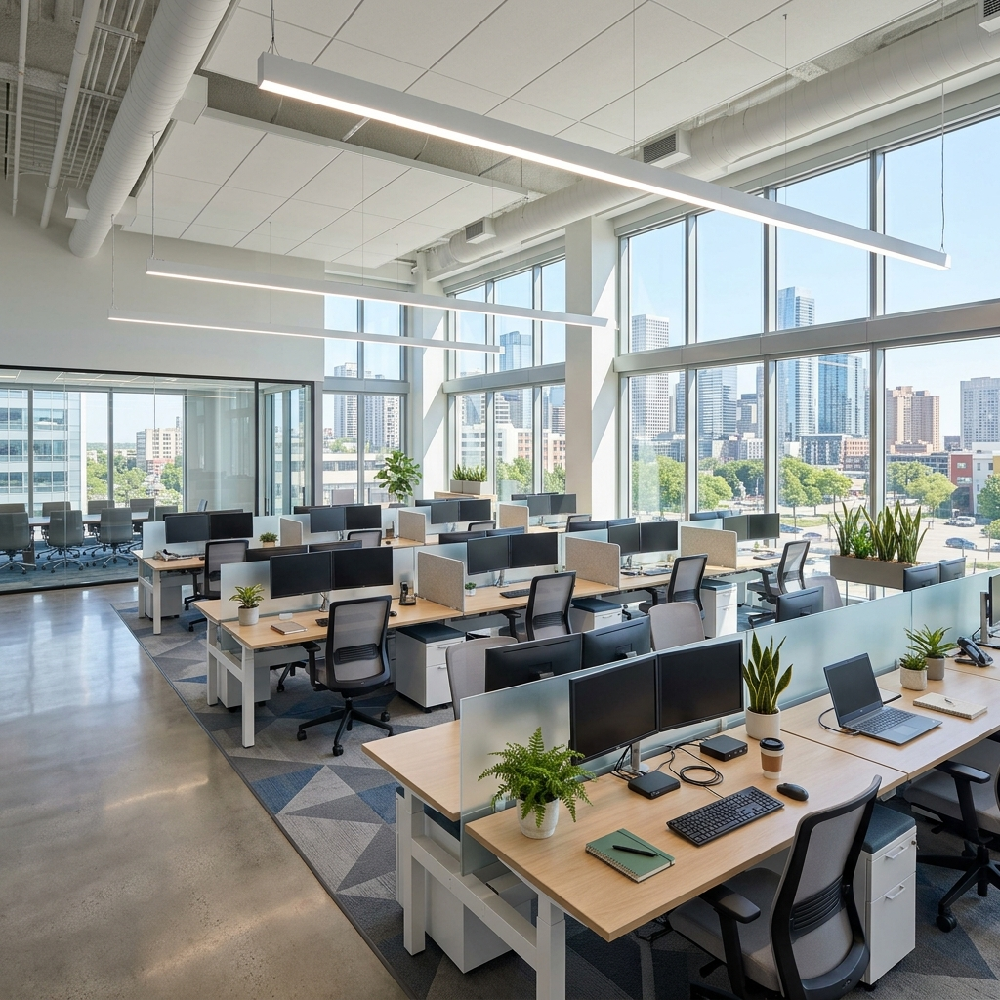
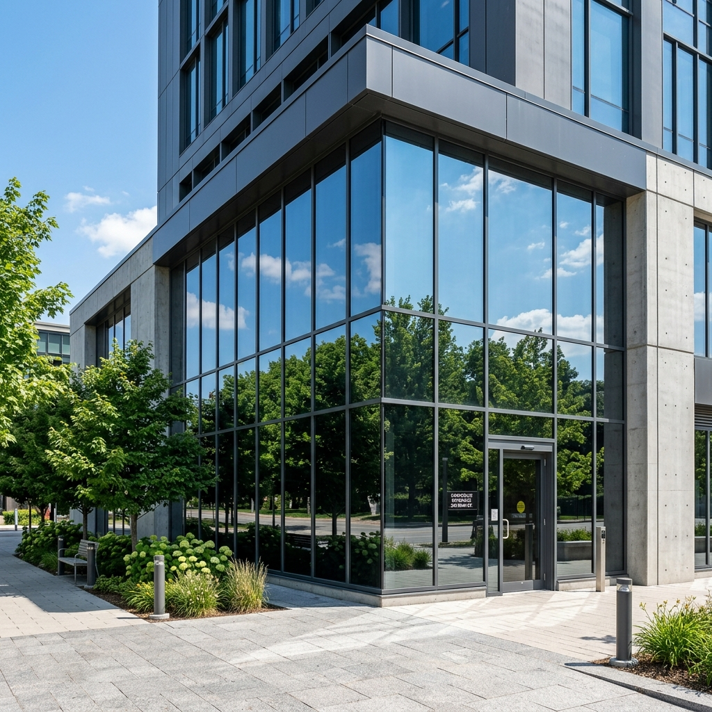
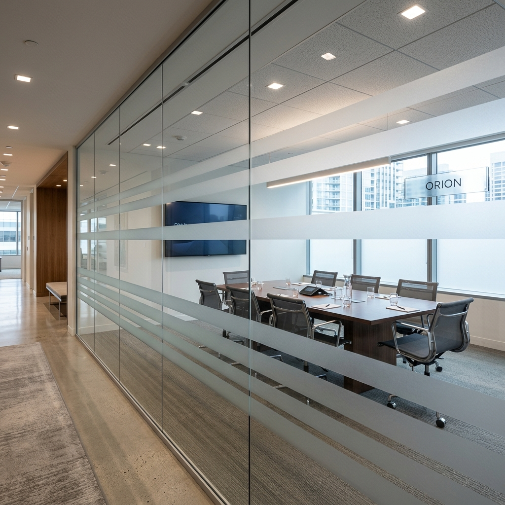

Bureaux en RDC, open spaces, salles de réunion : retrouvez votre intimité tout en laissant entrer la lumière naturelle. La solution anti-éblouissement pour un confort visuel immédiat.
Le problème
Le verre est le matériau star de l'architecture d'entreprise moderne. Il apporte lumière et design, mais il crée deux problèmes majeurs au quotidien : le manque cruel de confidentialité (surtout en rez-de-chaussée) et un éblouissement constant sur les écrans d'ordinateur.
Fermer les stores toute la journée ? C'est travailler à la lumière artificielle, ce qui fatigue les yeux et démotive les équipes.
Passants ou collègues peuvent observer vos écrans et vos réunions confidentielles à tout moment.
Les reflets du soleil rendent la lecture sur écran presque impossible sans plisser les yeux en permanence.
Les grandes fenêtres exposées transforment rapidement vos bureaux en serres dès les premiers rayons.
Solution 1
C'est la solution plébiscitée pour les façades et les bureaux en rez-de-chaussée. Grâce à notre gamme de films semi-métallisés, nous transformons vos vitrages en boucliers visuels et thermiques redoutables.
L'effet miroir renvoie l'image de l'extérieur, empêchant quiconque de voir à l'intérieur.
Réduit les reflets sur vos écrans jusqu'à 67%. Finie la fatigue oculaire en fin de journée.
Stoppe jusqu'à 65% de l'énergie solaire, soulageant instantanément votre système de climatisation.
Vous profitez de la vue extérieure et de la lumière naturelle sans assombrir la pièce de manière excessive.

Solution 2
Le miroir sans tain est parfait pour l'extérieur, mais pour vos cloisons intérieures ou pour conserver un maximum de luminosité, nous proposons des solutions d'aménagement plus douces et personnalisables.
Il floute la vision tout en laissant passer une lumière diffuse. Idéal pour cloisonner un espace de manière élégante, sans créer de sensation d'enfermement.
Ne couvrez pas toute la vitre ! Nous pouvons réaliser des découpes personnalisées (bandes, formes géométriques, logo de votre entreprise) pour allier confidentialité partielle et identité visuelle forte.

Nos experts vous conseillent sur la meilleure solution technique selon l'exposition et l'architecture de vos locaux.
📞 Planifier la visite d'un technicien conseilL'application d'un film de confidentialité en milieu professionnel ne tolère aucune imperfection (bulles, rayures, bords qui se décollent). Notre méthode d'intervention :
Nous intervenons selon vos horaires pour ne pas perturber le travail de vos collaborateurs (matin, soir ou week-end).
Pour les poses de films solaires en extérieur, nous appliquons un joint spécifique pour prévenir toute oxydation.
Que ce soit pour un grand film miroir ou la pose minutieuse d'une vitrophanie découpée, le résultat est optiquement irréprochable.
Salles de réunion, bureaux en RDC ou vitrines exposées : obtenez un chiffrage rapide et découvrez toutes nos options de personnalisation.